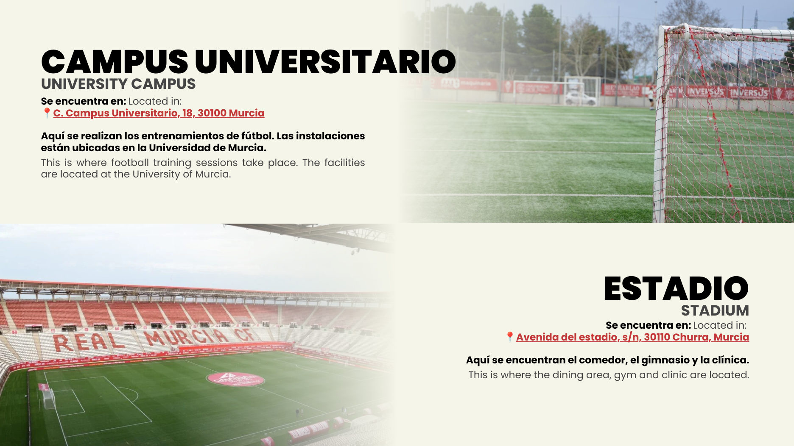
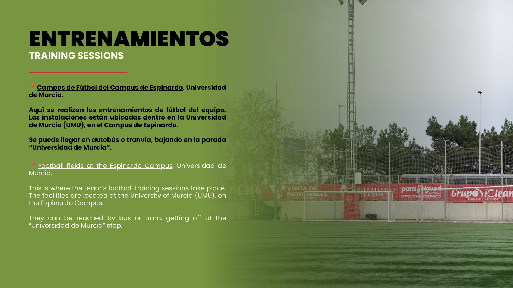
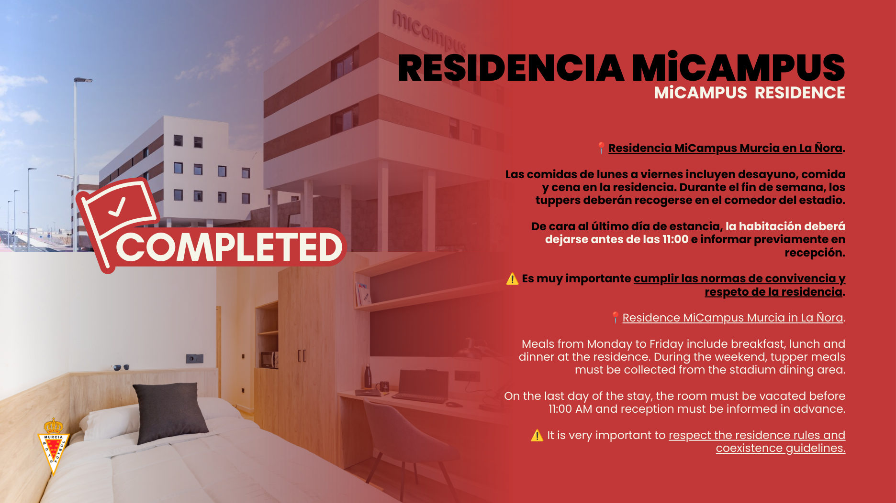
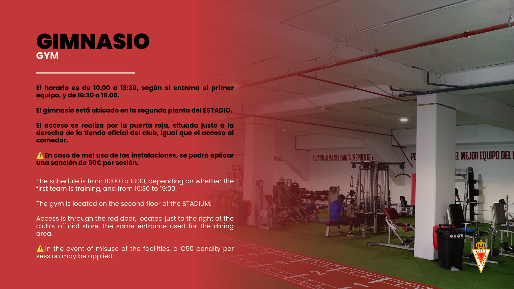

Tu desarrollo en Murcia
Programas de pago para futbolistas desde los 16 años, con preferencia para mayores de 18. Entrenamientos con técnicos del club, integración deportiva según perfil y nivel, y seguimiento de la experiencia. No son pruebas de selección ni garantizan fichaje.
Entrenamientos
Cuatro sesiones semanales de entrenamiento futbolístico, según planificación del club.
Integración
Actividades y partidos según disponibilidad, nivel deportivo y condiciones federativas.
Estancia
Alojamiento compartido y asistencia durante la estancia. Habitación individual bajo consulta.
Conocé los espacios del programa
Imágenes facilitadas en el dossier del Real Murcia CF.




Conocé el entorno del Real Murcia
Programas y tarifas
Elegí la duración que mejor se adapte a tu proyecto deportivo.
1 semana
Experiencia corta con servicios del club y ropa EFS.
15 días
Experiencia corta con servicios del club y ropa EFS.
1 mes
Programa ampliado con evaluación EFS, gimnasio y nutrición.
2 meses
Programa ampliado con evaluación EFS, gimnasio y nutrición.
3 meses
Programa ampliado con evaluación EFS, gimnasio y nutrición.
10 meses
Programa de temporada con seguimiento y servicios ampliados.
Preguntas frecuentes
¿Es una prueba oficial para fichar por el club?
No. Son programas de pago de entrenamiento y desarrollo futbolístico; no garantizan fichajes ni contratos.
¿Qué incluyen los programas de 1 semana y 15 días?
Incluyen los servicios correspondientes del club y ropa EFS. El detalle definitivo de estos programas cortos está pendiente de confirmación con el club y se comunicará antes de contratar.
¿Qué incluyen los programas de 1 a 10 meses?
Incluyen, además de los servicios del programa, evaluación deportiva EFS, ropa EFS, gimnasio, nutrición y recogida en el aeropuerto, según las condiciones contratadas.
¿Se puede participar en partidos oficiales?
La participación está sujeta a disponibilidad, nivel deportivo, requisitos de licencia y cupos federativos. No está garantizada.
¿Cómo se reserva una plaza?
Se solicita una reserva del 30 % del precio del programa. Las condiciones y el calendario del saldo se facilitan por escrito antes de contratar.
Empezá tu experiencia en España
Solicitá información y condiciones de disponibilidad.
Solicitar informacióninfo@elitefutbolscouting.com